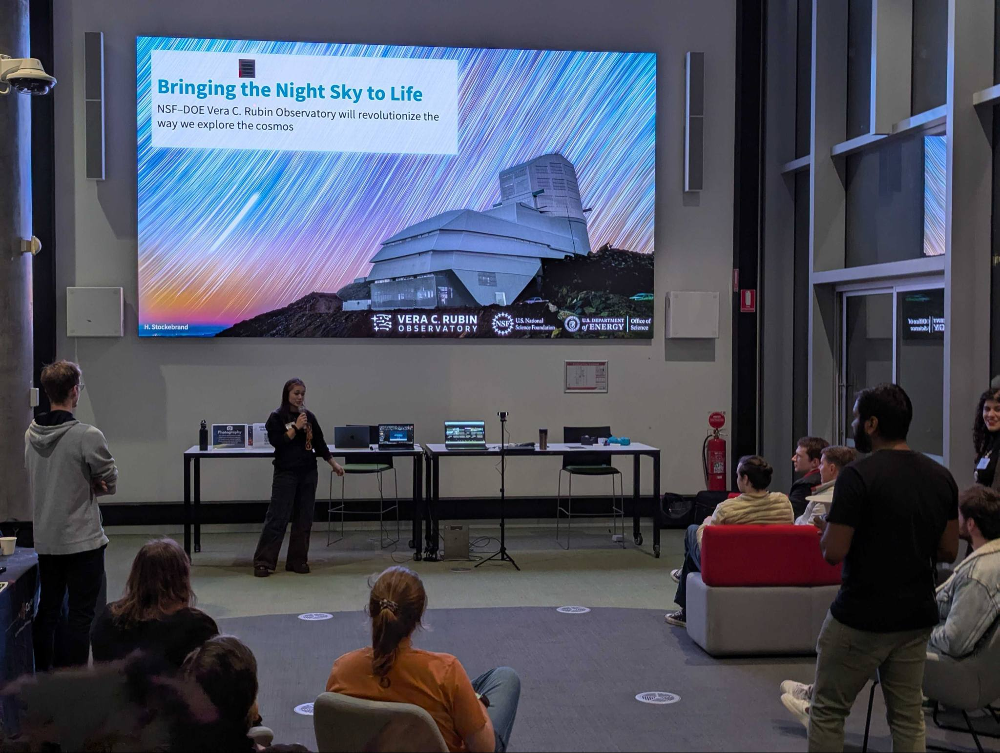
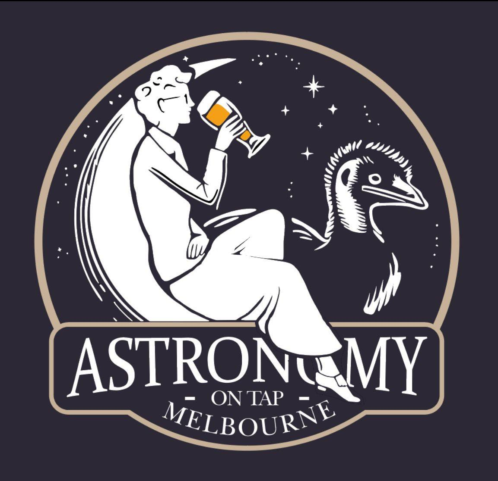

OzGrav Outreach
Through OzGrav I've had the opportunity to participate in many events to share my love of learning and astronomy with others. I have assisted and ran Mission Gravity sessions which teaches high schoolers about stellar evolution through the aid of an immersive virtual reality program. I've had the chance to interact and talk about space with people of all ages though public events such as Spooktacular Space, National Science Week events, and at the Celebrating Women and Diversity in STEM event.
Rubin First Look Watch Party

To celebrate the first release images of the Vera C. Rubin Observatory we organised
and hosted a First Look Watch Party at
Swinburne University. Despite the event being held at midnight (!) due to timezones, we still managed to gather an audience of 30.
The Rubin Observatory will be able to observe an unprecedented volume of the Universe per night, allowing for great strides in astronomical
research. This large survey will also produce unprecedented numbers of nightly transient alerts which will greatly benefit time-domain astronomy.
We are excited for the new data to arrive from this telescope, and are so happy that many people joined us for this momentus event!
Astronomy on Tap Melbourne
 Astronomy on Tap is an event that is held in locations all around the world, which brings astronomical researchers together with the general public in a casual environment. We are currently working towards bringing Astronomy on Tap to Melbourne, Australia!